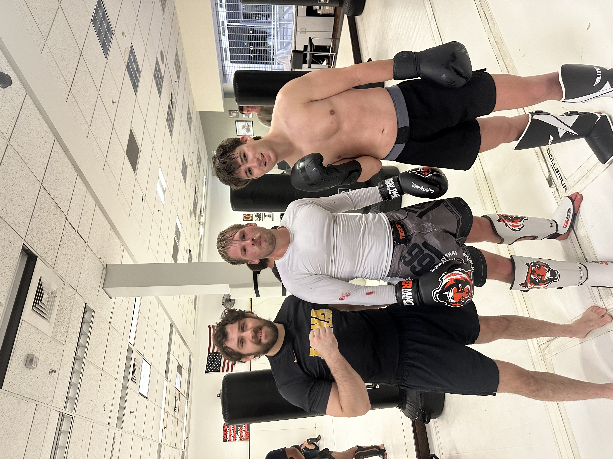
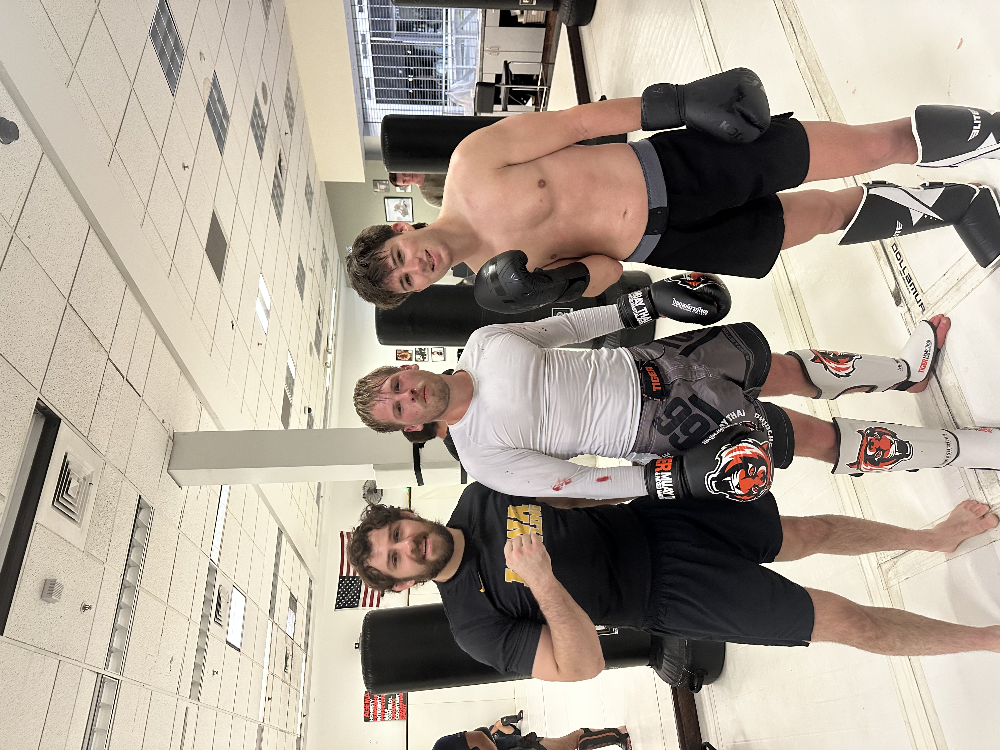
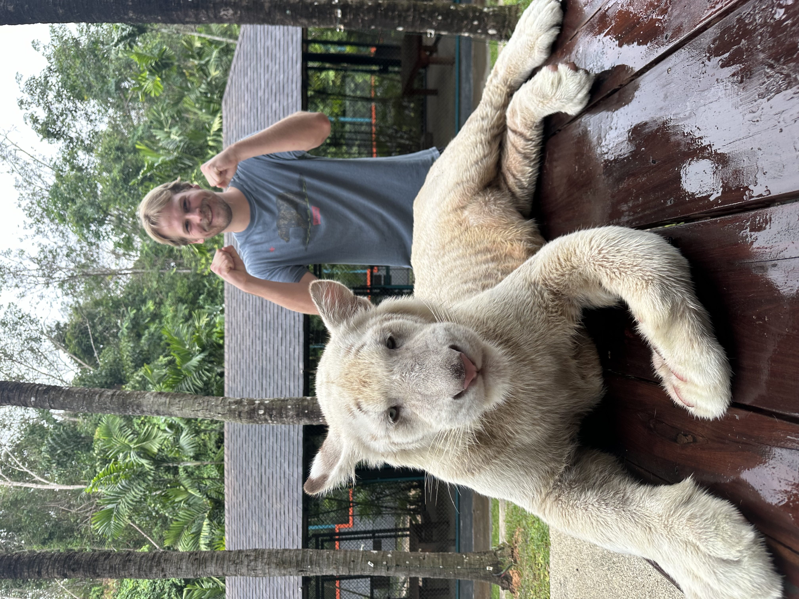
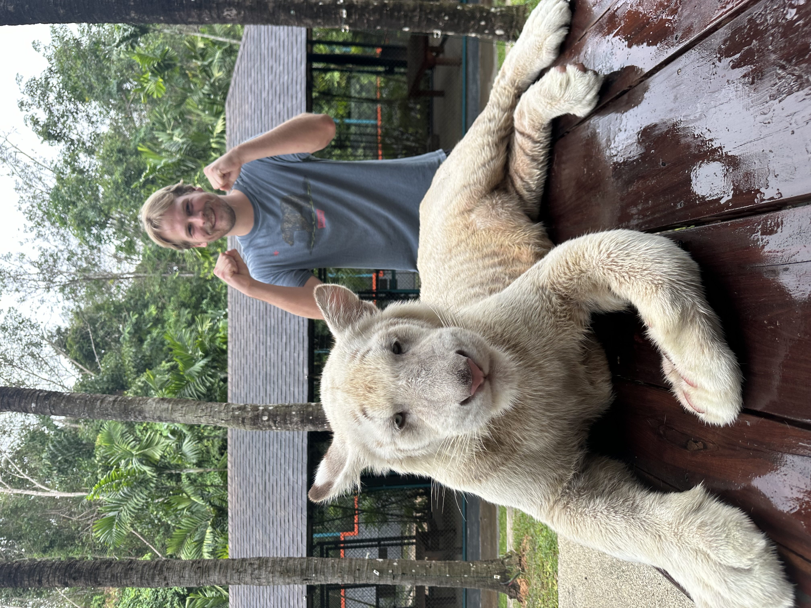

Welcome! I am a dedicated professional with a strong track record in sales, leadership, and personal development. I thrive in challenging environments and am passionate about growth, innovation, and achievement.
Based in Provo, Utah, I bring expertise in business marketing, customer service, combat sports, and creative pursuits, including writing and philosophy.
I approach every opportunity with discipline, curiosity, and a commitment to improvement. Whether working with clients, leading teams, or pursuing personal goals, I believe consistency and character drive long-term success.
My background spans sales, marketing, leadership development, and combat sports training, giving me a unique balance of analytical thinking and mental toughness. I enjoy environments that demand accountability, adaptability, and results.
Outside of work, I value faith, physical fitness, creative writing, and philosophical inquiry. These interests shape how I think, communicate, and solve problems — always with purpose and intention.
Brody Banks
Homebuyer Assistance Coordinator
Relentlessly driven, consistently achieving, never settling.

I don’t aim to be average — I aim to be effective, reliable, and relentlessly improving.
What distinguishes me as an employee is not a single skill or credential, but a consistent pattern of discipline, accountability, and follow-through. I do not approach work as a series of tasks to complete, but as responsibilities to own. When entrusted with a role, I take personal responsibility for outcomes, understanding that reliability and execution are what separate strong contributors from average ones.
I bring a rare combination of adaptability and structure to every position I hold. I learn systems quickly, ask the right questions early, and seek to understand not only what I am doing, but why it matters within the larger organization. This allows me to operate independently while still aligning closely with team objectives and leadership expectations.
My background in sales, leadership, and high-performance environments has sharpened my ability to remain composed under pressure. I am comfortable with rejection, long hours, and demanding standards. Rather than avoiding difficulty, I tend to perform best when expectations are high and accountability is clear. Challenges motivate me to refine my skills, improve my processes, and deliver stronger results.
Work ethic is one of my defining characteristics. I value punctuality, preparation, and consistency, and I do not require constant supervision to remain productive. I take initiative, identify inefficiencies, and look for ways to contribute beyond the scope of my assigned role. If something needs to be done and I am capable of doing it, I take ownership without hesitation.
Equally important is my ability to communicate effectively and professionally. I prioritize clarity, respect, and solution-oriented dialogue in all interactions. Whether working with clients, colleagues, or leadership, I strive to be someone others can rely on for honest communication and thoughtful decision-making. I understand that trust is built through consistency, discretion, and competence.
I also place a strong emphasis on personal development, believing that the quality of my work is directly tied to the quality of my habits. Through continuous learning, physical training, and self-discipline, I maintain focus, energy, and resilience. This commitment allows me to sustain high performance over time rather than delivering short bursts of effort.
Unlike many employees who limit themselves strictly to what is required, I actively seek to add value. I pay attention to patterns, results, and feedback, and I adjust quickly when improvement is needed. I view feedback as a tool rather than a threat and apply it immediately. This mindset has allowed me to grow rapidly and contribute meaningfully in every role I have held.
Ultimately, what sets me apart is consistency. I show up prepared, I follow through, and I take pride in producing work that reflects well on both myself and the organization I represent. Employers can expect reliability, initiative, and a long-term mindset from me — qualities that are increasingly rare and deeply valuable in any professional environment.

 

 
